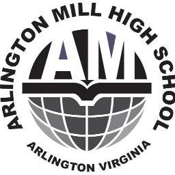
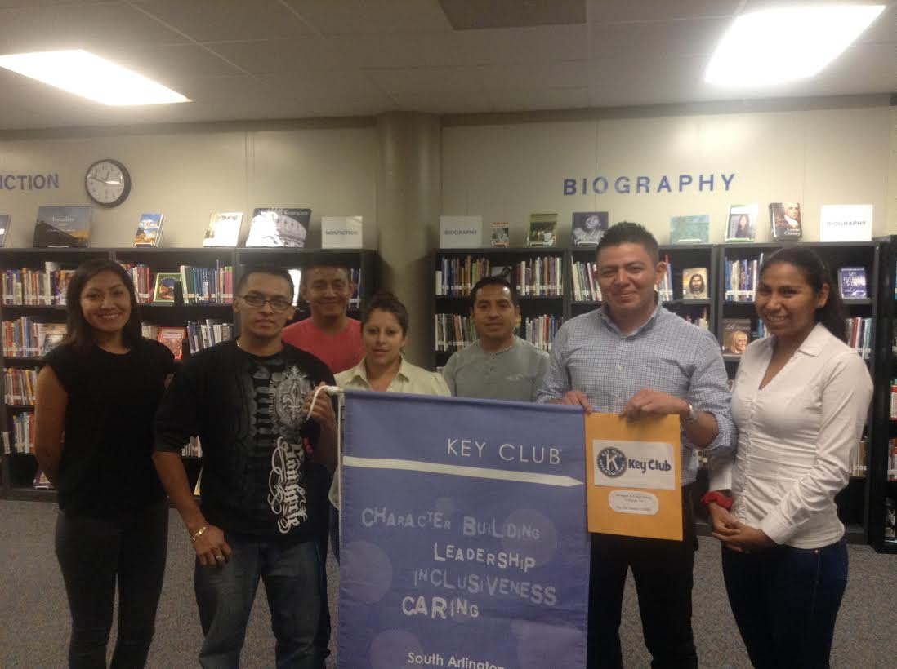

Arlington Mill High School Key Club


How Arlington Mill High School Works
Arlington Mill High school has it own members that are in charge to motivate students to support them in the activities they do monthly. The activities they do are announced days before the event, by Dr. Thompson (AMHS Principal). The main reason for doing these activities is to raise funds to support, students with low income around the World, and also to help children with leukemia or cancer.
What Key Club Is?
Key Club is the largest International High School service organization in the world, empowers its members to lead and serve by cultivating leadership skills, developing friendships, and performing community service. Key Club members have a passion for helping others and gain leadership skills they will carry with them for a lifetime. Key Club is an international student-led organization which provides its members with opportunities to provide service, build character and develop leadership. Key Clubs are established in a high school or equivalent institution. A community-based club also may be chartered. Elected officers can include president, one or more vice presidents, secretary, treasurer, editor and one director from each class.
How Key Club Works
Key Club International is a self-governing, student-led organization. Each year, Key Club members elect their student officers at club, district and international levels during club meetings and district and international conventions.
Key Club members receive guidance and support from adult volunteers, including Kiwanis advisors, faculty advisors and district administrators. Additionally, the Key Club International staff trains and assists the district governors and international board members.
The organization is funded by nominal dues paid by every member.
AMHS Key Club Members (2015-2016)

| Possition | Name | Last Name | Grade |
| President | Jose | Albarenga | 11 |
| Vice-President | Oscar | Flores | 12 |
| Secretary | Alejanda | Fernandez | 11 |
| Treasurer | Olga | Monroy | 11 |